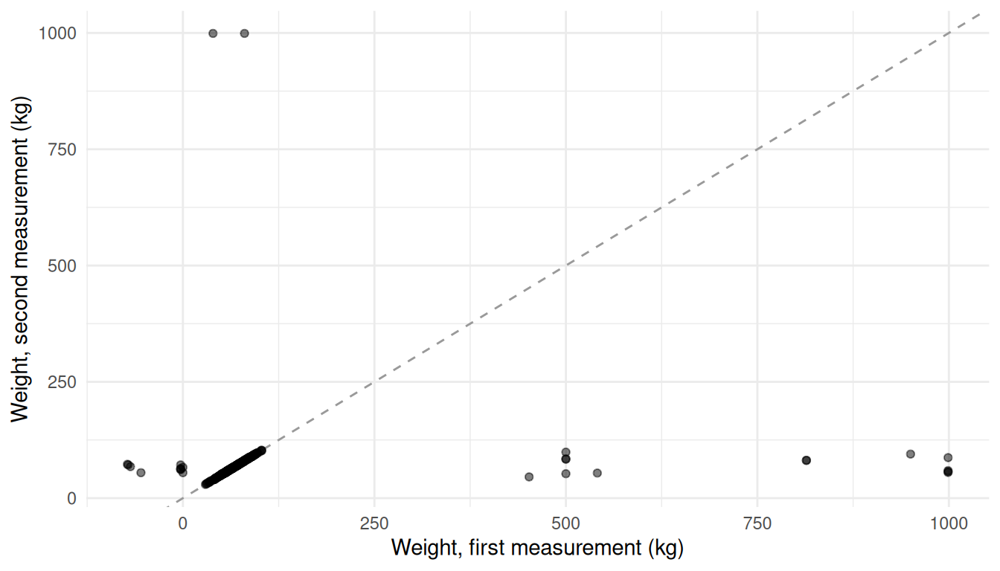

library(readr) # type_convert(), write_csv()
library(readxl) # read the Excel file
library(dplyr) # data manipulation
library(stringr) # work with text
library(lubridate) # parse dates
library(janitor) # clean_names(), get_dupes()
library(here) # file paths from the project root
library(ggplot2) # plots to spot problemsCleaning data in R
Tutorial 3: consistent categories, dates, impossible values and a record of every decision
R
Data cleaning
Clean the imported BAL study metadata in R: fix IDs and duplicates, make category spellings consistent, parse mixed date formats, deal with impossible measurements, check that columns agree with each other, and keep a record of every decision.
NoteWhat you’ll learn
- Audit a dataset to find what needs cleaning
- Make category spellings consistent with
tolower()andcase_when() - Spot missing-value codes that are really an answer
- Parse dates entered in mixed formats with
lubridate - Replace impossible measurements without guessing
- Check that columns agree with each other, and flag rows for review instead of silently changing them
- Keep a record of every cleaning decision
ImportantSimulated data
This tutorial uses the same simulated BAL study extract as Tutorial 1. No row describes a real person.
1. Start where Tutorial 1 ended
Tutorial 1 imported the study metadata and found problems with count() and get_dupes(). This tutorial fixes them. Load the packages (install any you’re missing with install.packages()):
metadata_path <- here("data", "bal_metadata.xlsx")Import the metadata the same way as in Tutorial 1:
missing_codes <- c("", "N/A", "ND", ".", "-", "not done")
metadata <- read_excel(metadata_path, sheet = "MetaData", col_types = "text") |>
type_convert(na = missing_codes) |>
clean_names()
dim(metadata)[1] 502 29
TipNever edit the raw file
Do all cleaning in code and leave bal_metadata.xlsx untouched. If you change your mind about a decision, or receive an updated file, you rerun the script. Cleaning by hand in Excel can’t be checked, repeated or undone.
2. Audit before you change anything
Start by counting how many different values each text column holds. A column with two possible answers shouldn’t have eight:
metadata |>
summarise(across(where(is.character), \(x) n_distinct(x, na.rm = TRUE))) |>
tidyr::pivot_longer(everything(), names_to = "column", values_to = "distinct_values") |>
arrange(desc(distinct_values))# A tibble: 21 × 2
column distinct_values
<chr> <int>
1 pt_id 500
2 date_seen 445
3 art_start_date 89
4 referral_source 49
5 smear_grade 21
6 cxr_finding 20
7 ethnicity 13
8 smoking_status 12
9 drug_type 11
10 igra_result 11
# ℹ 11 more rowspt_id and the dates are meant to have many values. But sex has 8 spellings of 2 values, smoking_status has 12, and referral_source has 49 versions of a handful of clinics. That list is the to-do list for this tutorial.
As you clean, check every change against the original values. This small helper reads like a before-and-after: on each row, the original spellings (before), the clean value they became (after), and how many rows that covers (n):
compare <- function(before, after) {
tibble(before, after) |>
summarise(
before = paste(sort(unique(before)), collapse = ", "),
n = n(),
.by = after
) |>
select(before, after, n) |>
arrange(after)
}3. IDs and duplicates
Participant IDs should be SP followed by five digits. str_detect() with a regular expression finds any that aren’t:
metadata |>
filter(!str_detect(pt_id, "^SP\\d{5}$")) |>
select(pt_id)# A tibble: 1 × 1
pt_id
<chr>
1 sp20422One ID was typed in lower case. Fix the case and remove stray spaces, then deal with the two participants Tutorial 1 found entered twice. Their two rows are identical in every column, so distinct() safely drops the copies:
metadata_clean <- metadata |>
mutate(pt_id = toupper(str_trim(pt_id))) |>
distinct()
nrow(metadata_clean)[1] 500n_distinct(metadata_clean$pt_id)[1] 500500 rows and 500 IDs: one row per participant.
Warning
distinct() only removes rows that match in every column. If two rows share an ID but differ somewhere (a different age, say), they’re not copies, and you need to find out which one is right before you drop either.
4. Consistent spellings
Two-value columns
Most spelling problems are differences in capitals and abbreviations. Lower-case everything first with tolower(), so “FEMALE”, “Female” and “female” all become “female” and you only have to list each answer once. Then use case_when() to say which values mean what. Each line is a condition on the left of ~ and the value to use when it’s true on the right:
clean_sex <- function(x) {
x <- tolower(x)
case_when(
x %in% c("f", "female") ~ "Female",
x %in% c("m", "male") ~ "Male"
)
}
compare(metadata_clean$sex, clean_sex(metadata_clean$sex))# A tibble: 2 × 3
before after n
<chr> <chr> <int>
1 F, female, Female, FEMALE Female 256
2 M, male, Male, MALE Male 244Eight spellings become two clean values, one row each. case_when() returns NA for any value that matches none of the conditions. That’s a useful safety net: a spelling you didn’t expect shows up in an NA row of the comparison rather than being quietly lumped in with something else. (You could add a catch-all last line, TRUE ~ "Other", but then unexpected values would hide inside “Other”.)
The yes/no columns (drug_use, vaping, art) and hiv_status follow the same pattern, so one function cleans them all with across():
clean_yes_no <- function(x) {
x <- tolower(x)
case_when(
x %in% c("y", "yes") ~ "Yes",
x %in% c("n", "no") ~ "No"
)
}
clean_pos_neg <- function(x) {
x <- tolower(x)
case_when(
x %in% c("pos", "positive") ~ "Positive",
x %in% c("neg", "negative") ~ "Negative"
)
}
metadata_clean <- metadata_clean |>
mutate(
sex = clean_sex(sex),
across(c(drug_use, vaping, art), clean_yes_no),
hiv_status = clean_pos_neg(hiv_status)
)
metadata_clean |> count(hiv_status)# A tibble: 2 × 2
hiv_status n
<chr> <int>
1 Negative 297
2 Positive 203A few more values
The IGRA result and ethnicity have more than two answers, but the same approach works: list every spelling of each answer.
igra_raw <- tolower(metadata_clean$igra_result)
igra_clean <- case_when(
igra_raw %in% c("pos", "positive") ~ "Positive",
igra_raw %in% c("neg", "negative") ~ "Negative",
igra_raw %in% c("indeterminate", "borderline") ~ "Indeterminate"
)
compare(metadata_clean$igra_result, igra_clean)# A tibble: 3 × 3
before after n
<chr> <chr> <int>
1 Borderline, indeterminate, Indeterminate Indeterminate 68
2 Neg, negative, Negative, NEGATIVE Negative 166
3 Pos, positive, Positive, POSITIVE Positive 266ethnicity_raw <- tolower(metadata_clean$ethnicity)
ethnicity_clean <- case_when(
ethnicity_raw == "black african" ~ "Black African",
ethnicity_raw %in% c("coloured", "mixed", "mixed race") ~ "Coloured",
ethnicity_raw == "white" ~ "White",
ethnicity_raw == "asian" ~ "Asian"
)
compare(metadata_clean$ethnicity, ethnicity_clean)# A tibble: 4 × 3
before after n
<chr> <chr> <int>
1 asian, Asian Asian 82
2 black african, Black African, BLACK AFRICAN Black African 119
3 coloured, Coloured, COLOURED, Mixed, mixed race Coloured 189
4 white, White, WHITE White 110metadata_clean <- metadata_clean |>
mutate(igra_result = igra_clean, ethnicity = ethnicity_clean)Two of these are decisions, so they go in the decision log:
- A borderline IGRA is too close to the cut-off to call positive or negative, so it joins Indeterminate: in both cases the test didn’t give a usable answer.
- “Mixed” and “mixed race” describe the same group as Coloured, the term used in the South African census, so all three become Coloured.
Columns that need a decision
Some columns can’t be cleaned by fixing capitals alone. You have to decide what the values mean.
Smoking status has ex, Ex-smoker and Former, which clearly mean the same thing, and yes for current smokers. But it also has both never and no. “No” probably means “doesn’t smoke now”, which could include former smokers who answered loosely. Here we treat no as “Never”, and write that decision down (see section 9):
smoking_raw <- tolower(metadata_clean$smoking_status)
smoking <- case_when(
smoking_raw == "yes" ~ "Current",
smoking_raw %in% c("ex", "ex-smoker", "former") ~ "Former",
smoking_raw %in% c("never", "no") ~ "Never"
)
compare(metadata_clean$smoking_status, smoking)# A tibble: 3 × 3
before after n
<chr> <chr> <int>
1 yes, Yes, YES Current 122
2 ex, Ex, EX, Ex-smoker, Former Former 214
3 never, no, No, NO Never 164metadata_clean <- metadata_clean |>
mutate(smoking_status = factor(smoking, levels = c("Never", "Former", "Current")))Drug type needs local knowledge: tik is South African slang for crystal methamphetamine, so tik and crystal meth are the same drug. Only one value changes. The last line, TRUE ~ drug_type, is a condition that is always true, so every value not matched above it keeps its current value. str_to_sentence() then fixes the capitals:
metadata_clean <- metadata_clean |>
mutate(
drug_type = tolower(drug_type),
drug_type = case_when(
drug_type == "tik" ~ "crystal meth",
TRUE ~ drug_type # keep every other value
),
drug_type = str_to_sentence(drug_type)
)
metadata_clean |> count(drug_type)# A tibble: 6 × 2
drug_type n
<chr> <int>
1 Cannabis 42
2 Crystal meth 105
3 Heroin 21
4 Mandrax 48
5 Multiple 42
6 <NA> 242
Tip
TRUE ~ or .default
Since dplyr 1.1.0 you can write the catch-all as .default = drug_type instead of TRUE ~ drug_type. Both do the same thing; TRUE ~ also works in older versions, and you’ll see it in most existing code. Use a catch-all only when you mean “leave everything else as it is”, as here. When you’re mapping spellings to categories, leave it out so unexpected values show up as NA.
Ordered categories
Sputum smear grade was recorded in 21 ways, including +2, 2 +, two plus and 0 for negative. Removing spaces first leaves fewer variants to list. The grades have a natural order, so store them as an ordered factor; later analyses can then treat Scanty < 1+ < 2+ < 3+ correctly:
smear_raw <- metadata_clean$smear_grade |>
tolower() |>
str_remove_all("\\s")
smear <- case_when(
smear_raw %in% c("0", "neg", "negative") ~ "Negative",
smear_raw %in% c("scant", "scanty") ~ "Scanty",
smear_raw %in% c("1+", "+1", "oneplus") ~ "1+",
smear_raw %in% c("2+", "+2", "twoplus") ~ "2+",
smear_raw %in% c("3+", "+3", "threeplus") ~ "3+"
)
metadata_clean <- metadata_clean |>
mutate(smear_grade = factor(smear,
levels = c("Negative", "Scanty", "1+", "2+", "3+"), ordered = TRUE))
metadata_clean |> count(smear_grade)# A tibble: 5 × 2
smear_grade n
<ord> <int>
1 Negative 351
2 Scanty 43
3 1+ 39
4 2+ 45
5 3+ 22Free-text categories
Chest X-ray findings are closer to free text. case_when() can test keywords with str_detect() as well as exact values. It checks the conditions from top to bottom and uses the first one that’s true, so the order matters, and so does choosing the right keyword:
cxr_original <- metadata_clean$cxr_finding
cxr <- tolower(cxr_original)
# A tempting shortcut: anything containing "normal" is normal
shortcut <- case_when(
str_detect(cxr, "normal") ~ "Normal",
TRUE ~ "Abnormal"
)
compare(cxr_original, shortcut) |>
filter(after == "Normal")# A tibble: 1 × 3
before after n
<chr> <chr> <int>
1 Abnormal - other, No abnormality, normal, Normal, NORMAL, Other abnormality Normal 252The shortcut goes wrong twice. “abnormal - other” and “other abnormality” both contain the word “normal”, so abnormal X-rays are called normal. And “NAD” (no abnormality detected) doesn’t contain it, so normal X-rays are called abnormal. Match normal findings exactly, and use keywords only for the abnormal ones:
metadata_clean <- metadata_clean |>
mutate(cxr_finding = case_when(
cxr %in% c("normal", "nad", "no abnormality") ~ "Normal",
str_detect(cxr, "cavit") ~ "Cavitation",
str_detect(cxr, "infiltrate|consolidation") ~ "Infiltrate/consolidation",
cxr == "pleural effusion" ~ "Pleural effusion",
cxr == "fibrosis" ~ "Fibrosis",
str_detect(cxr, "other") ~ "Other abnormality"
))
compare(cxr_original, metadata_clean$cxr_finding)# A tibble: 6 × 3
before after n
<chr> <chr> <int>
1 cavitary, Cavitary, cavitation, Cavitation, Cavity noted Cavitation 66
2 Fibrosis Fibrosis 9
3 consolidation, Consolidation, infiltrate, Infiltrate, Infiltrate/Consolidation Infiltrate/consolidation 78
4 NAD, No abnormality, normal, Normal, NORMAL Normal 301
5 Abnormal - other, Other, Other abnormality Other abnormality 33
6 Pleural effusion Pleural effusion 13NAD is the clinical abbreviation for “no abnormality detected”. Fourteen spellings now fall into six categories, and there’s no NA row.
Many variants: use a lookup table
referral_source has 49 versions of the referring clinic’s name, including full names, abbreviations (BV CHC, KDH) and a misspelling (Mitchells Plein). A case_when() with 49 values would work, but a lookup table is easier to read and to update. First, let rules remove the differences that don’t matter, so there are fewer variants to look up:
referral_key <- metadata_clean$referral_source |>
tolower() |>
str_remove_all("'") |>
str_remove(" (chc|community health( centre)?|hosp(ital)?|district hospital|dhc)$")
n_distinct(referral_key)[1] 20Then write one row per remaining variant, and join:
referral_lookup <- tribble(
~referral_key, ~referral_site,
"bellville", "Bellville CHC",
"bv", "Bellville CHC",
"claremont", "Claremont CHC",
"cchc", "Claremont CHC",
"delft", "Delft CHC",
"dchc", "Delft CHC",
"eerste river", "Eerste River Hospital",
"erh", "Eerste River Hospital",
"elsies river", "Elsies River CHC",
"erchc", "Elsies River CHC",
"khayelitsha", "Khayelitsha District Hospital",
"kdh", "Khayelitsha District Hospital",
"mitchells plain", "Mitchells Plain District Hospital",
"mitchells plein", "Mitchells Plain District Hospital",
"mp", "Mitchells Plain District Hospital",
"ottery", "Ottery CHC",
"retreat", "Retreat CHC",
"somerset", "Somerset Hospital",
"woodstock", "Woodstock CHC",
"ws", "Woodstock CHC"
)
metadata_clean <- metadata_clean |>
mutate(referral_key = referral_key) |>
left_join(referral_lookup, by = "referral_key") |>
select(-referral_key, -referral_source)
metadata_clean |> count(referral_site)# A tibble: 11 × 2
referral_site n
<chr> <int>
1 Bellville CHC 47
2 Claremont CHC 41
3 Delft CHC 54
4 Eerste River Hospital 40
5 Elsies River CHC 58
6 Khayelitsha District Hospital 35
7 Mitchells Plain District Hospital 53
8 Ottery CHC 43
9 Retreat CHC 44
10 Somerset Hospital 38
11 Woodstock CHC 4749 spellings became 11 clinics, and no rows were left without a site. If a new spelling appears in an updated file, it comes through the join as NA, so the check filter(is.na(referral_site)) finds it and you add one row to the lookup table.
Note
ERCHC could stand for Elsies River CHC or Eerste River CHC. No Eerste River CHC appears anywhere else in the data (only the hospital), so we map it to Elsies River CHC. That’s an assumption, so it goes in the decision log, and ideally you’d confirm it with whoever entered the data.
5. When “missing” is really a category
Tutorial 1 treated N/A and ND as missing. For most columns that’s right, but not for the rifampicin-resistance result (GeneXpert_RIF). In the Excel file it holds Sensitive, Resistant and Indeterminate, plus three codes: N/A, Not applicable and ND (not done). They look like three different things. Read the original text again and check where they occur:
rif_original <- read_excel(metadata_path, sheet = "MetaData", col_types = "text") |>
transmute(pt_id = toupper(Pt_ID), mtb_result = tolower(GeneXpert_Res), rif = GeneXpert_RIF) |>
distinct()
rif_original |>
filter(rif %in% c("N/A", "Not applicable", "ND")) |>
count(mtb_result)# A tibble: 4 × 2
mtb_result n
<chr> <int>
1 error 19
2 indeterminate 10
3 invalid 11
4 mtb not detected 212None of them occurs when TB was detected. GeneXpert only reports rifampicin resistance when it detects M. tuberculosis, so all three codes mean the same thing: there’s no resistance result because there was no TB to test. That’s a real answer, not missing data. But Tutorial 1’s missing-value codes turned N/A and ND into NA while Not applicable stayed as text, splitting one group into two.
The fix is to derive the RIF result from the rule instead of relying on whichever code was typed: first clean the MTB result, then set the RIF result to “Not applicable” whenever MTB wasn’t detected.
The MTB result also has three labels for a failed test: Error, Invalid and Indeterminate. None of them gives a usable result, and each group is small, so combine them into one “No result” category:
xpert_original <- metadata_clean$gene_xpert_res
xpert_raw <- tolower(xpert_original)
metadata_clean <- metadata_clean |>
mutate(
gene_xpert_res = case_when(
xpert_raw == "mtb detected" ~ "MTB detected",
xpert_raw == "mtb not detected" ~ "MTB not detected",
xpert_raw %in% c("error", "invalid", "indeterminate") ~ "No result"
),
gene_xpert_rif = case_when(
gene_xpert_res == "MTB detected" ~ gene_xpert_rif,
TRUE ~ "Not applicable"
)
)
compare(xpert_original, metadata_clean$gene_xpert_res)# A tibble: 3 × 3
before after n
<chr> <chr> <int>
1 mtb detected, MTB detected, MTB Detected, MTB DETECTED MTB detected 164
2 mtb not detected, MTB not detected, MTB Not Detected MTB not detected 280
3 Error, Indeterminate, Invalid No result 56Now compare the original RIF codes with the derived result. Joining by pt_id lines each participant’s original code up with their clean value:
rif_check <- rif_original |>
left_join(select(metadata_clean, pt_id, gene_xpert_rif), by = "pt_id")
compare(rif_check$rif, rif_check$gene_xpert_rif)# A tibble: 4 × 3
before after n
<chr> <chr> <int>
1 Indeterminate Indeterminate 38
2 Indeterminate, N/A, ND, Not applicable, Sensitive Not applicable 336
3 Resistant Resistant 22
4 Sensitive Sensitive 104N/A, ND and Not applicable are now one “Not applicable” group. The “Not applicable” row also takes in some Sensitive and Indeterminate entries: 66 rows recorded “Sensitive” for a sample where no TB was detected, which is impossible, and the rule corrects them. Every participant with MTB detected keeps their resistance result.
Tip
When one column depends on another, derive it from the rule rather than trusting what was typed. Then a data-entry mistake in the dependent column can’t get through.
6. Dates in mixed formats
date_seen was entered as text in several formats:
metadata_clean |>
filter(!str_detect(date_seen, "^\\d{2}/\\d{2}/\\d{4}$")) |>
distinct(date_seen) |>
head(8)# A tibble: 8 × 1
date_seen
<chr>
1 09-09-2020
2 17-07-2017
3 12-07-2017
4 09-02-2019
5 14 July 2017
6 25-06-2020
7 20-06-2018
8 15-10-2016 dmy() from lubridate reads day-month-year dates whatever the separator, two-digit years and month names included. Use it, then look at what failed:
date_seen <- dmy(metadata_clean$date_seen, quiet = TRUE)
metadata_clean$date_seen[is.na(date_seen)][1] "08/20/2017" "12/26/2016" "06/26/2020" "07/28/2020" "10/17/2018" "08/16/2018" "03/19/2016"
[8] "08/21/2020"These 8 dates fail because they’re in American month/day/year order: there’s no 20th month. Read the failures with mdy(), and use coalesce() to fill each gap from the second attempt:
metadata_clean <- metadata_clean |>
mutate(
date_seen = coalesce(dmy(date_seen, quiet = TRUE), mdy(date_seen, quiet = TRUE)),
art_start_date = coalesce(dmy(art_start_date, quiet = TRUE), mdy(art_start_date, quiet = TRUE))
)
range(metadata_clean$date_seen)[1] "2016-01-04" "2020-12-08"sum(is.na(metadata_clean$date_seen))[1] 0All dates parse, and they fall within the study period (2016–2020).
WarningSome date errors can’t be detected
A US-format date such as 03/04/2018 is a valid day-month-year date too (3 April instead of 4 March), so dmy() reads it without complaint. Only dates with a day above 12 give themselves away. The real fix is upstream: ask for dates in one unambiguous format such as 2018-03-04 when the data is collected.
7. Impossible measurements
summary() quickly shows values that can’t be right:
metadata_clean |>
select(age, height_1_cm, height_2_cm, weight_1_kg, weight_2_kg) |>
summary() age height_1_cm height_2_cm weight_1_kg weight_2_kg
Min. :11.00 Min. :-170.1 Min. :125.4 Min. :-72.50 Min. : 29.40
1st Qu.:23.00 1st Qu.: 157.9 1st Qu.:158.3 1st Qu.: 57.80 1st Qu.: 58.10
Median :34.00 Median : 166.0 Median :165.8 Median : 68.05 Median : 67.75
Mean :34.75 Mean : 172.7 Mean :172.2 Mean : 83.63 Mean : 71.82
3rd Qu.:47.00 3rd Qu.: 173.9 3rd Qu.:173.6 3rd Qu.: 79.08 3rd Qu.: 78.28
Max. :59.00 Max. :1863.0 Max. :999.0 Max. :999.00 Max. :999.00
NAs :17 NAs :14 NAs :18 NAs :22 Heights of −170 cm and 1,863 cm, and weights of 999 kg. Each participant was measured twice, so plotting the two measurements against each other shows the problems clearly. Good pairs fall on the diagonal:
ggplot(metadata_clean, aes(weight_1_kg, weight_2_kg)) +
geom_abline(colour = "grey60", linetype = "dashed") +
geom_point(alpha = 0.5) +
labs(x = "Weight, first measurement (kg)", y = "Weight, second measurement (kg)") +
theme_minimal()
The errors are recognisable: 999 and 500 used as “missing” codes, a minus sign typed by mistake (-72.5), and a missing decimal point (814 for 81.4). It’s tempting to repair them (divide by 10, drop the minus sign), but each repair is a guess. Because every participant has a second measurement, there’s no need to guess:
- Set any value outside a plausible range to
NA. - Use the mean of the remaining measurements. If one is missing, use the other.
# Keep values inside the range; anything else becomes NA
plausible <- function(x, lower, upper) {
case_when(
between(x, lower, upper) ~ x,
TRUE ~ NA
)
}
# The mean of two values; if one is missing, the other one
mean_of_two <- function(a, b) (coalesce(a, b) + coalesce(b, a)) / 2
metadata_clean <- metadata_clean |>
mutate(
across(starts_with("height"), \(x) plausible(x, 100, 220)),
across(starts_with("weight"), \(x) plausible(x, 25, 250)),
height_cm = mean_of_two(height_1_cm, height_2_cm),
weight_kg = mean_of_two(weight_1_kg, weight_2_kg),
bmi = weight_kg / (height_cm / 100)^2
) |>
select(-matches("_[12]_(cm|kg)$"))
metadata_clean |>
select(height_cm, weight_kg, bmi) |>
summary() height_cm weight_kg bmi
Min. :125.9 Min. : 29.40 Min. : 9.675
1st Qu.:158.2 1st Qu.: 57.92 1st Qu.:20.626
Median :165.8 Median : 67.70 Median :24.599
Mean :165.4 Mean : 67.92 Mean :25.217
3rd Qu.:173.6 3rd Qu.: 78.39 3rd Qu.:29.277
Max. :204.5 Max. :102.90 Max. :52.480
NAs :1 NAs :2 NAs :3 Heights and weights are now in a believable range. Three participants have no valid height or weight at all, and stay NA.
Now check the variable you derived. The lowest BMI is below 10, which is barely compatible with life:
metadata_clean |>
filter(bmi < 13) |>
select(pt_id, age, height_cm, weight_kg, bmi) |>
arrange(bmi)# A tibble: 6 × 5
pt_id age height_cm weight_kg bmi
<chr> <dbl> <dbl> <dbl> <dbl>
1 SP27231 53 178. 30.6 9.67
2 SP20507 21 177. 31.4 9.97
3 SP30253 33 181. 34.4 10.5
4 SP31755 30 158. 29.4 11.7
5 SP26975 15 184. 40.2 11.9
6 SP05942 47 177. 40.5 12.9 Both measurements agree for these participants (178 cm and about 30 kg, for example), so this isn’t a typing error the second measurement can catch. The values could be real, or the height or weight could have been recorded for the wrong person. You can’t tell from the data, so these rows get flagged for review in the next section.
Tip
Choose plausible ranges before you look at the results, and base them on biology rather than on the data (100–220 cm covers the adolescents and adults in this study). A range picked to remove the points you don’t like isn’t a rule, it’s a way of hiding data.
8. Duplicate columns and rows to review
Some problems only appear when you compare columns. study_group looks like tb_diagnosis:
metadata_clean |> count(study_group == tb_diagnosis)# A tibble: 1 × 2
`study_group == tb_diagnosis` n
<lgl> <int>
1 TRUE 500They’re identical on every row, so drop study_group; keeping two copies invites them to drift apart later.
The very low BMIs from section 7 could be real or a recording error, and the data alone can’t tell you which. Don’t guess: flag the rows and send the list to the study team:
metadata_clean <- metadata_clean |>
select(-study_group) |>
mutate(review_bmi = !is.na(bmi) & bmi < 13)
metadata_clean |> count(review_bmi)# A tibble: 2 × 2
review_bmi n
<lgl> <int>
1 FALSE 494
2 TRUE 6Analyses can then include or exclude these rows deliberately, and you can update them when the answers come back.
9. Finish and save
Set the order of the main grouping variables. Without this, R sorts categories alphabetically (“Active TB” before “Control”), and every table and plot comes out in an awkward order:
metadata_clean <- metadata_clean |>
mutate(
tb_diagnosis = factor(tb_diagnosis, levels = c("Control", "LTBI", "Active TB", "Indeterminate")),
hiv_status = factor(hiv_status, levels = c("Negative", "Positive")),
sex = factor(sex)
) |>
relocate(pt_id, date_seen, sex, age, height_cm, weight_kg, bmi, tb_diagnosis, hiv_status)
glimpse(metadata_clean)Rows: 500
Columns: 28
$ pt_id <chr> "SP34696", "SP22845", "SP31186", "SP39161", "SP06180", "SP34673", "SP0363…
$ date_seen <date> 2019-08-01, 2017-07-25, 2020-06-21, 2018-09-28, 2020-09-09, 2020-08-17, …
$ sex <fct> Female, Female, Male, Female, Female, Male, Female, Female, Male, Female,…
$ age <dbl> 53, 30, 15, 50, 30, 35, 54, 38, 20, 43, 44, 27, 24, 40, 49, 21, 44, 28, 5…
$ height_cm <dbl> 181.60, 160.15, 143.90, 165.75, 174.15, 171.95, 168.30, 156.25, 173.90, 1…
$ weight_kg <dbl> 54.90, 50.75, 57.65, 59.10, 80.20, 71.85, 39.30, 56.00, 57.60, 80.45, 80.…
$ bmi <dbl> 16.64718, 19.78710, 27.84054, 21.51198, 26.44402, 24.30090, 13.87472, 22.…
$ tb_diagnosis <fct> LTBI, Control, LTBI, Control, LTBI, Control, Active TB, LTBI, Control, Ac…
$ hiv_status <fct> Negative, Positive, Negative, Positive, Positive, Positive, Negative, Pos…
$ smoking_status <fct> Never, Former, Former, Former, Never, Current, Current, Never, Never, For…
$ drug_use <chr> "Yes", "No", "Yes", "No", "Yes", "Yes", "No", "No", "No", "Yes", "No", "N…
$ drug_type <chr> "Crystal meth", NA, "Cannabis", NA, "Mandrax", "Multiple", NA, NA, NA, "C…
$ vaping <chr> "No", "Yes", "No", "No", "No", "Yes", "No", "Yes", "Yes", "Yes", "Yes", "…
$ vaping_type <chr> NA, "Pod", NA, NA, NA, "juul", NA, "Juul", "e-cigarette", "vape pen", "Po…
$ gene_xpert_res <chr> "MTB not detected", "MTB not detected", "MTB not detected", "MTB not dete…
$ gene_xpert_rif <chr> "Not applicable", "Not applicable", "Not applicable", "Not applicable", "…
$ smear_grade <ord> Negative, Negative, Negative, Negative, Negative, Negative, 3+, Negative,…
$ cxr_finding <chr> "Normal", "Normal", "Normal", "Normal", "Normal", "Normal", "Normal", "No…
$ igra_result <chr> "Positive", "Negative", "Positive", "Negative", "Positive", "Negative", "…
$ igra_value_iu_ml <dbl> 9.13, 0.01, 9.93, 0.16, 5.00, 0.09, 0.16, 2.84, NA, 4.48, 1.36, 10.96, 0.…
$ cd4_count <dbl> NA, 354, NA, 562, 529, 459, NA, 406, 364, 169, NA, 206, 115, NA, NA, NA, …
$ viral_load_cp_ml <dbl> NA, 1346, NA, 4213, 171, 383061, NA, 90239, 24018, 87794, NA, 59014, 3110…
$ art <chr> NA, "No", NA, "No", "No", "No", NA, "Yes", "No", "No", NA, "Yes", "No", N…
$ art_regimen <chr> NA, NA, NA, NA, NA, NA, NA, "TDF/3TC/DTG", NA, NA, NA, "Tenofovir/Lamivud…
$ art_start_date <date> NA, NA, NA, NA, NA, NA, NA, 2014-08-07, NA, NA, NA, NA, NA, NA, NA, NA, …
$ ethnicity <chr> "White", "Coloured", "White", "White", "Black African", "Coloured", "Blac…
$ referral_site <chr> "Elsies River CHC", "Eerste River Hospital", "Retreat CHC", "Ottery CHC",…
$ review_bmi <lgl> FALSE, FALSE, FALSE, FALSE, FALSE, FALSE, FALSE, FALSE, FALSE, FALSE, FAL…A final check, the same audit as section 2:
metadata_clean |>
summarise(across(where(\(x) is.character(x) | is.factor(x)), \(x) n_distinct(x, na.rm = TRUE))) |>
tidyr::pivot_longer(everything(), names_to = "column", values_to = "distinct_values")# A tibble: 18 × 2
column distinct_values
<chr> <int>
1 pt_id 500
2 sex 2
3 tb_diagnosis 4
4 hiv_status 2
5 smoking_status 3
6 drug_use 2
7 drug_type 5
8 vaping 2
9 vaping_type 8
10 gene_xpert_res 3
11 gene_xpert_rif 4
12 smear_grade 5
13 cxr_finding 6
14 igra_result 3
15 art 2
16 art_regimen 10
17 ethnicity 4
18 referral_site 11Every category now has the number of values it should, apart from vaping_type and art_regimen: those two are left for you in Try it yourself.
Save the result. write_rds() keeps factor levels and dates exactly as they are; a CSV file loses them, so use it only for sharing with other software:
write_rds(metadata_clean, here("data", "bal_metadata_clean.rds"))
write_csv(metadata_clean, here("data", "bal_metadata_clean.csv"))The decision log
Every judgement call made above, in one place. Keep a table like this with your analysis (in the script, a README or the methods section), so anyone can see what was changed and why:
| Column | Decision | Rows affected |
|---|---|---|
pt_id |
Upper-cased one ID; removed 2 exact duplicate rows | 3 |
smoking_status |
Treated “no” as Never | 125 |
drug_type |
Treated “tik” as crystal meth | 47 |
cxr_finding |
Grouped into 6 categories; infiltrate and consolidation combined | all |
referral_source |
Mapped 49 spellings to 11 sites; ERCHC assumed to be Elsies River CHC | all |
igra_result |
Borderline combined with Indeterminate | 14 |
ethnicity |
“Mixed” and “mixed race” combined with Coloured | 66 |
gene_xpert_res |
Error, Invalid and Indeterminate combined as “No result” | 56 |
gene_xpert_rif |
Derived from the MTB result: N/A, ND and Not applicable become one “Not applicable” group whenever MTB wasn’t detected | 500 |
date_seen |
Read 8 month-first dates with mdy() |
8 |
| Height, weight | Values outside 100–220 cm and 25–250 kg set to NA; mean of two measurements |
41 |
bmi |
BMI below 13 flagged in review_bmi, not changed |
6 |
study_group |
Dropped (identical to tb_diagnosis) |
— |
Try it yourself
Two columns are left for you, using the same patterns:
art_regimenhas 10 spellings of what are really two regimens: TLD (tenofovir, lamivudine and dolutegravir) and efavirenz-based ones such as TEE. Usetolower()andcase_when()to reduce it toTLDandEfavirenz-based.vaping_typemixes capitals (pod,Pod). Clean the case. Then decide whetherJuul, a brand of pod device, should be its own category or grouped withPod, and add the decision to your log.
Common pitfalls
| Problem | Symptom | Fix |
|---|---|---|
| Cleaning in Excel | Changes can’t be checked or repeated | Leave the raw file alone; clean in code |
| Unlisted spellings | New NA values after recoding |
compare() before and after; leave out a TRUE ~ catch-all so case_when() returns NA for anything unlisted |
| Keyword matches too much | “Abnormal” counted as “normal” | Match exact values first, keywords second |
| Missing codes that are really an answer | One group split into NA and “Not applicable” |
Check where the codes occur; derive values from the rule where you can |
| Capitals | “Female”, “FEMALE” and “female” listed separately | tolower() before matching |
| Mixed date formats | dmy() returns NA for some dates |
Check the failures; coalesce() a second format |
| Guessing at errors | 814 “fixed” to 81.4 |
Use a repeat measurement, or set to NA |
| Silent fixes to conflicting data | Nobody knows a value was changed | Flag rows for review instead |
| Vector named like a column | mutate(sex = sex) silently keeps the old column |
Give cleaned vectors their own names (sex_clean) |
| Alphabetical categories | Tables start with “Active TB” | Set factor levels in a sensible order |
Next
The cleaned metadata is ready for analysis. In Tutorial 4 you’ll choose and run statistical tests on it, starting from the cleaned files.
← Back to Tutorial 2: Using one dataset in both R and Python